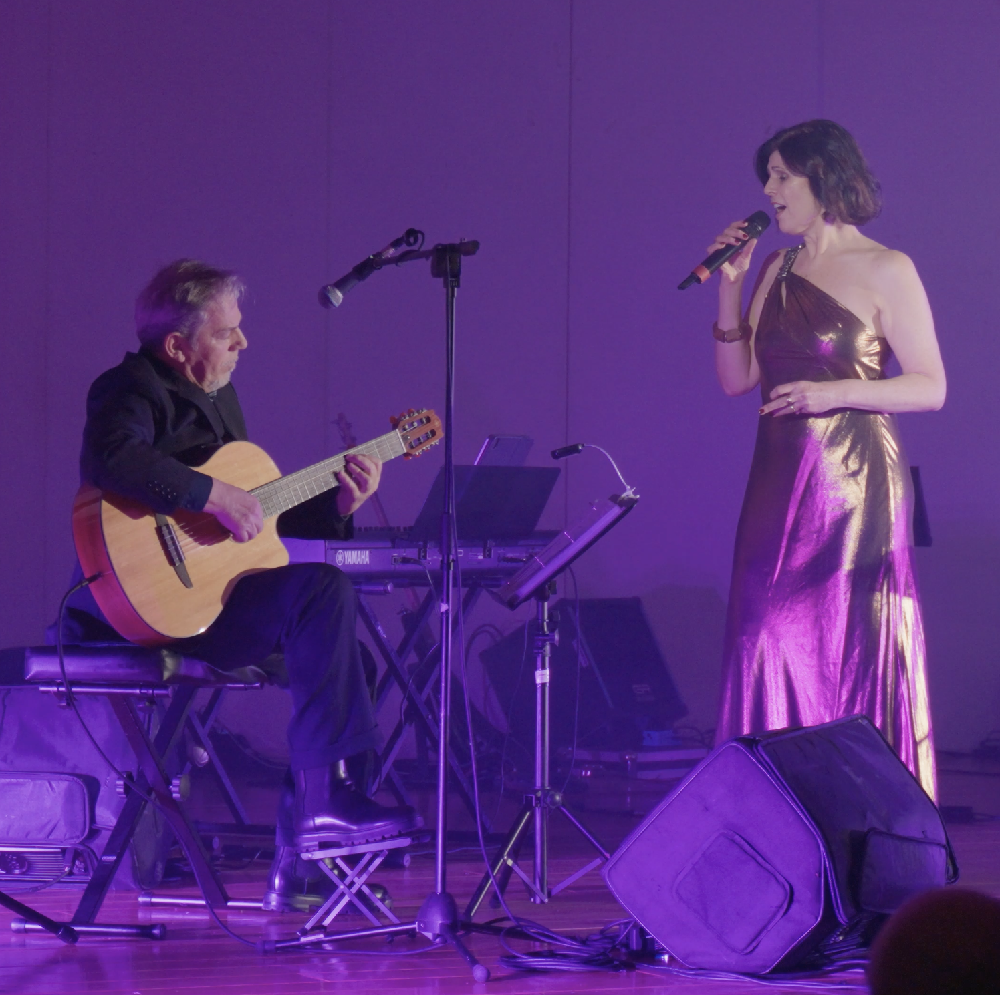

Luxury Hospitality · Live Music Residency
One Sheet · 2026 / 2027
SELMAH &
LUIGI RANA
The Brazilian Voice & Classical Guitar Duo
Bossa nova, samba-jazz and the great Brazilian songbook — with elegant excursions
into Italian and Latin classics, performed with the refinement your guests expect.
An intimate acoustic duo shaped by 35 years on stage between Brazil and Italy,
alongside Toquinho, Grammy winner Toninho Horta and Ornella Vanoni.

Selmah & Luigi Rana · live
The Duo
SELMAH (Selma Hernandes) — voice & light percussion — is one of the Brazilian
voices with the longest continuous presence on the Italian music scene: a warm, magnetic
contralto praised by the Italian press and a recurring guest on RAI Radio 1.
Luigi Rana — classical guitar & musical direction — is a multi-platinum
arranger (Europe and Asia) whose elegant, orchestral guitar carries the entire evening
with no need for a band.
Repertoire · curated by daypart
Aperitivo & sunset
Bossa nova and Brazilian ballads — Jobim, João Gilberto, Vinicius de Moraes — at discreet, conversation-friendly volume.
Dinner
Samba-jazz and MPB, with the great Italian songbook — the timeless melodies of the Dolce Vita — woven in.
Late lounge
Latin American classics in Spanish and jazz standards reimagined in bossa style — always within the duo’s signature sound.
Selected Highlights
“One of the most refined voices of Brazilian music in Italy”
Gazzetta del Mezzogiorno · Culture
Toninho Horta — special guest of the Grammy-winning guitarist (2024 Italian tour) · Toquinho — joint project launched by the ANSA news agency · Ornella Vanoni — Auditorium Parco della Musica, Rome
~45 million viewers — live on Rede Globo's Domingão do Faustão (Brazil) · Galluzzi Prize, first woman awarded
Watch the duo
▶ Brazilian live set — youtube.com/watch?v=32rDNh2MM6Y
▶ Italian songbook live — youtube.com/watch?v=iQeNbM-2mYo
▶ Full press kit — www.selmahernandes.it
Residency at a Glance
Format
Acoustic duo — voice, light percussion & classical guitar
Sets
2–3 × 45 min per evening, up to 5 nights weekly
Sound
Elegant, low-volume, conversation-friendly. House sound system required (guitar input, percussion mic, in-ear or floor monitor) — the duo travels with personal vocal microphone only
Repertoire
Extensive, no-repeat programme — Brazilian, Italian & Latin, tailored to the venue's daypart flow
Languages
Portuguese · Italian · Spanish · English
Engagements
1 to 6 months — seasonal or ongoing
Available from
October 2026 — incl. winter season 2026/27
Base
Italy (EU) — worldwide availability
Why it works for your venue
Not a cover act: a signature Brazilian evening guests remember the venue for — the presence of an ensemble, the discretion of a lobby pianist.